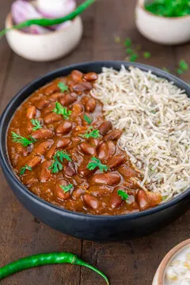

RAJMA CHAWAL

DESCRIPTION
This Rajma recipe is a lightly spiced, creamy and delicious Punjabi style curry made with protein rich kidney beans, aromatics like onions, ginger, garlic, fragrant spices and tangy tomatoes.
INGREDIENTS
- Rice/Chawal
- Kidney Beans/Rajma
- Salt
- Red Chilli Powder
- Onions
- Crushed Tomatoes
INSTRUCTIONS
- Soak the Rajma for 12hours in warm water.
- Next Day, Drain and Rinse the soaked Rajma and Rice.
- Put Rajma in Pressure Cooker for 15-20 minutes.
- Put the Rice in another frying pan filled with water for 15-20 minutes.
- Take a frying pan. Put Ghee in it. Fry the onions and Crushed Tomatoes. Put Salt and Red Chilli Powder.
- Add the sauce to cooked Rajma. Stir it well.
- Drain the water from Rice.
- Rajma Chawal is prepared.